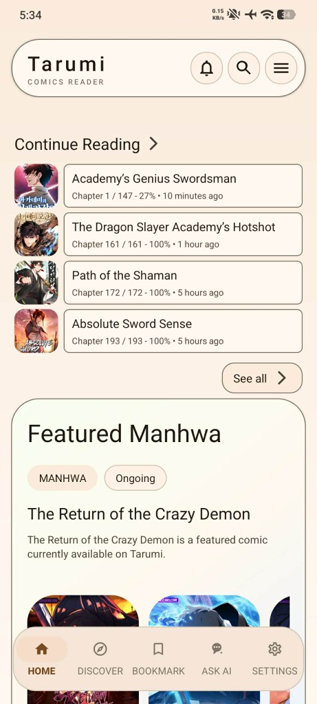

Tarumi is a premium, open-source reader for Manga, Manhwa, and Manhua on Android. Download chapters for 100% offline reading, switch effortlessly between Dark Mode, Light Mode, and Coffee themes, and explore 1,360+ sources completely ad-free.

Packed with next-generation reading features, tailored for customization, and structured for absolute performance.
Access over 1,200 active catalogs for Manga, Manhwa, and Manhua across the globe, automated by our high-speed parsing engine.
Features browser-to-app session handoff, persistent cookies, user-agent continuity, and zero-loop challenge recovery for protected domains.
Personalize your reading experience with Dark Mode, Light Mode, our cozy Coffee Theme, Miku, Asuka, and dynamic Monet color palettes.
Download chapters for 100% offline reading. Enjoy continuous vertical scroll for Webtoons & Manhwa, and smooth page-turning for Manga & Manhua.
Target specific trusted sources or run full scans with the new source-selection repair dialog to fix broken bookmarks and find fresh replacements seamlessly.
Exact series slug matching for ManhwaRead prevents mismatched chapters, paired with per-chapter routing for OmegaScans and 1,360+ catalogs.
Protect your reading list with standard passcodes or fingerprints. Features a custom cute cat paw pattern keypad and one-tap Incognito browsing.
Export and import manual progress data, or sync reading metrics dynamically to leading tracking providers like AniList, MAL, Kitsu, and Shikimori.
Experience the clean layout, custom styling systems, and modern details crafted inside Tarumi.
Download the latest official build directly on your Android device and start reading. Safe, open-source, and signed for release.
Users on v1.6.5 (and v1.6.4) can install v1.6.6 directly as a seamless in-place update. If upgrading from an old debug build (com.tarumi.reader.debug), follow these steps to preserve your reading data:
app-debug version.app-release.apk (Package ID: com.tarumi.reader).Read details about our recent development logs, feature upgrades, and parser fixes.
Find answers to common questions about the app, sources, security, and installation details.
Yes. Tarumi is an open-source project licensed under GNU GPLv3. It contains no advertisements, no tracking SDKs, and is completely free to download and use.
1. Download the official app-release.apk file.
2. Open your device's Downloads folder and tap the file.
3. If prompted by Android, enable "Install from Unknown Sources".
4. Confirm the installation and launch Tarumi from your app drawer.
Starting with v1.6.3+, Tarumi is signed with our official release keystore (Package ID: com.tarumi.reader). All future release updates (including v1.6.6) install directly over your existing app without requiring a reinstall!
You can tap the download button next to any chapter or select multiple chapters to save them directly to your device storage. Tarumi also fully supports reading local archives in `.cbz`, `.zip`, and folder formats stored in your local directory.
Tarumi v1.6.6 is a source engine update. It syncs the bundled parsers with the latest Kotatsu-Redo revision, brings a new Indonesian source, repairs several sites that changed their backends, and fixes Eris Scans series that were showing only a fraction of their chapters.
Yes. You can authorize your AniList, MyAnimeList, Kitsu, and Shikimori accounts under Settings. Tarumi automatically pushes updates to your trackers as you read, syncing current chapter progress, ratings, and library card statuses.
Tarumi is an offline-first browser and catalog parser tool. The developers of this application do not host, store, or distribute any content displayed inside the app. Tarumi serves as an advanced interface pointing to public online web links. All copyrighted material, trademark identifiers, and content remains properties of their respective owners. Please address any DMCA takedown requests directly to the web domains hosting the raw assets.